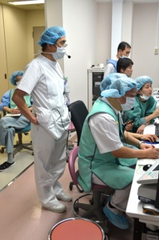
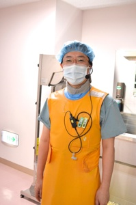
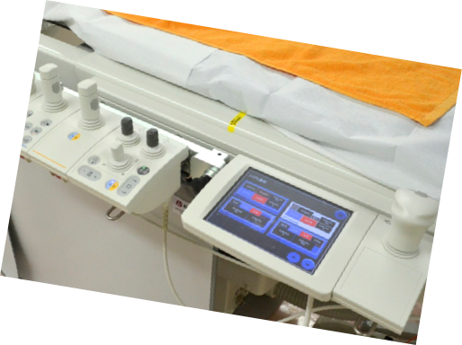
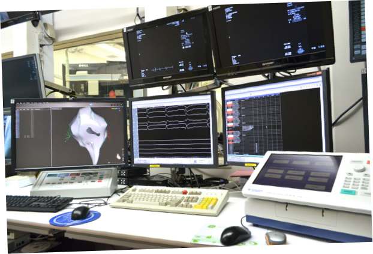
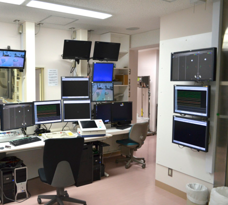
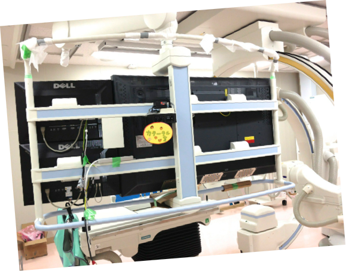
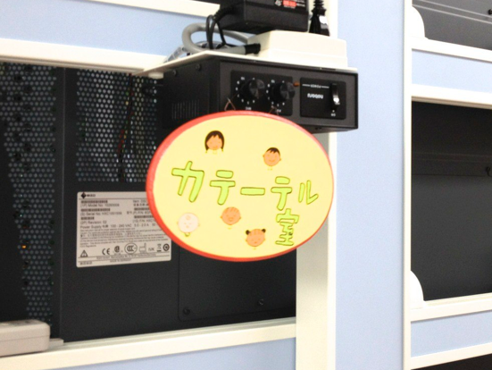

2012/4月，不整脈アブレーション治療のために設計された
カテーテル検査室「カテ室五番」が完成しました．


操作室に取り付けられたモニター．４本の支柱にとりつけたアームでモニターの位置や角度は自由にかえられます．
操作室はモニターとPCだらけですが，16種類の入力を16個のモニターに自由に出力できる，16 x 16 マトリックススイッチャーを導入して制御しています．

こちらはカテーテル検査室内の大型モニターです．56インチラージモニター + 24インチモニターを右に2枚つけてもらいました．
操作室にカメラを付けて，術者にみえるようになっています．
スティミュレータを操作しているのがみえて，チームの意思疎通にとても効果的，かつ快適です．デジタルインカムも6台設置して，
小さな声で6人が同時に会話可能，コミュニケーションも万全です．






カテ室内のモニターのサイズは56インチ，表示するコンテンツのレイアウトや大きさは自由に変更可能です．
右には24インチのモニターを追加で2枚つけてもらいました．
この画面は，CARTO 3D map用の画面構成．3D画面と電位の画面が目の前に広がって，とても快適です．

表示するレイアウトは手元の操作パネルでワンタッチで変更できます．


操作室のモニターは柱からの支柱で固定されており，配置やモニターの向きを自由に変更できます．
達人なら，刺激装置，laboの操作，CARTO3の操作，ジェネレータの操作まで，一人で可能かも．
操作室側の12枚のモニターに，操作室内カメラの映像を表示しています．
こういう極端なこともできるということで，これをみせるとみんなびっくりします．
16x16マトリックススイッチャーの威力です．
術者がみている56インチモニターの右側に設置されている24インチモニター 2面も，この16x16マトリックススイッチャーで制御しています．
インカムのマイクとイヤホンは，コーナンで買ってきたジップロックに入れて管理．
片付けていない人がいたら，一目瞭然です．

右に三つ並んでいるのは，「見学者用」
これから宣伝して見学者をつのっていきます．


娘が誕生日プレゼントにくれた「カテーテル室」のプレート．「ここにかざってもいいですか」と
放射線技師さんに聞いてみました．
いいですよ，といわれましたが，今はまだ
しまってあります
誕生日プレゼントのプレート
頑張ってこどもたちの不整脈を
治療していきましょう．
中村先生の声もとてもよく聞こえます．声を張り上げることがなくなり，長時間のsessionでも，のどが楽になりました．